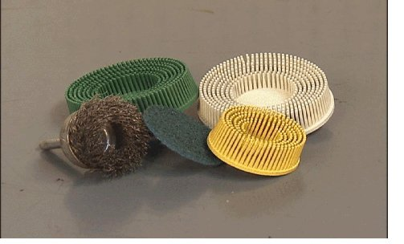

Engine - Use of 'Surface Conditioning Disks'
INFORMATIONBulletin No.: 00-06-01-012D
Date: October 25, 2011
Subject: Use of "Surface Conditioning Disks" When Cleaning Engine Gasket Sealing Surfaces and/or Reused Engine Parts
Models:
2013 and Prior GM Passenger Cars and Trucks
Supercede:
This bulletin is being revised to add the 2010-2013 model years and add Alternative Cleaning Method. Please discard Corporate Bulletin Number 00-06-01-012C (Section 06 - Engine/Propulsion System).
The Use of "Surface Conditioning Disks"

Notice
Do not use abrasive pad/bristle devices to clean the gasket surfaces of engine components. Abrasive pads should not be used for the following reasons:
- Abrasive pads will produce fine grit that the oil filter will not be able to remove from the oil. THIS GRIT IS ABRASIVE AND HAS BEEN KNOWN TO CAUSE INTERNAL ENGINE DAMAGE. Abrasive pads can easily remove enough material to round cylinder head surfaces. This has been known to affect the gasket's ability to seal, especially in the narrow seal areas between the combustion chambers and coolant jackets.
- Abrasive pads, wire and abrasive rubber finger wheels can also remove enough metal to affect cylinder head, block, oil pan rail, and intake manifold runner flatness, which can cause coolant and oil leaks and air leaks. It takes about 15 seconds to remove 0.203 mm (0.008 in) of metal with an abrasive pad.
- Abrasive pads, Abrasive rubber fingers wheels & wire wheels with high speeds grinders produce air bourn debris that can travel throughout the shop contaminating other work being performed outside of the immediate work area.
When cleaning engine gasket sealing surfaces and/or cleaning parts from an engine that are to be reused, surface conditioning disks (typically constructed of woven fiber or molded bristles) that contain abrasives, such as a high amount of Aluminum Oxide, should NOT be used.
The use of such surface conditioning disks dislodges Aluminum Oxide (from the disk) and metal particles, which can lead to premature engine bearing failure.
The presence of Aluminum Oxide in engine oil has been shown to cause premature engine bearing failure. In some cases, this failure occurs in as little as 2,200 km (1,000 mi) or less after the repair has been made.
Surface conditioning disks may grind the component material and imbed it into the disk. This can result when more aggressive grinding of the gasket surface takes place.
Recommended Cleaning Procedure
General Motors recommends the use of a razor blade or plastic gasket scraper to clean the gasket surface on engine components that are to be reused. When cleaning gasket surfaces, please note the following:
- When using a razor blade type gasket scraper, use a new razor blade for each cylinder head and corresponding block surface. Hold the blade as parallel to the gasket surface as possible. This will ensure that the razor blade does not gouge or scratch the gasket surfaces.
- Do not gouge or scrape the combustion chamber surfaces.
- Do not gouge or scratch any engine-sealing surface during the cleaning process.
Alternative Cleaning Method:
To properly clean the sealing surface prior to reassembly, GM Low VOC Cleaner, P/N 19287401 (in Canada, PN 88901247), should be sprayed on the mating surface. Use care to avoid getting solvent in any area other than the mating surface to be cleaned. Allow it to soak in for several minutes to loosen the old RTV sealer/gasket material. GM strongly recommends using a plastic razor blade or non- metallic scraper to remove all loose sealer/gasket material.
Important
The appearance of the gasket surface is not critical - the feel is. There will be indentations from the gasket left in the cylinder head after all the gasket material is removed. The new gasket will fill these small indentations when it is installed.

Disclaimer